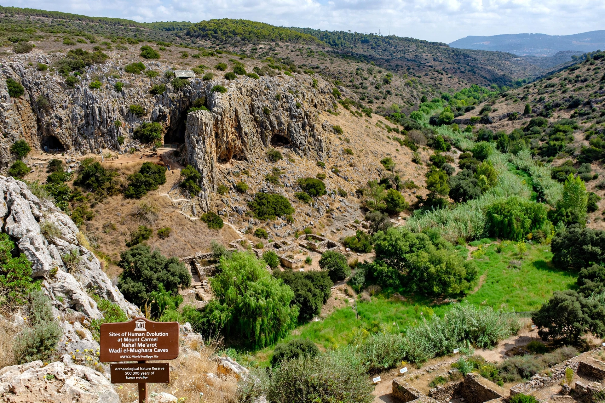

The Nahal Me'arot Nature Reserve is a site of human evolution at the foot of Mount Carmel in northern Israel, where four caves — Tabun, Jamal, el-Wad, and Skhul — preserve evidence of human occupation spanning roughly 500,000 years. In 2012 the site was inscribed by UNESCO as a World Heritage Site under the name "Sites of Human Evolution at Mount Carmel: The Nahal Me'arot/Wadi el-Mughara Caves".

| Nahal Me'arot | |
|---|---|
| Location | Mount Carmel, near Atlit, Israel |
| Caves | Tabun, Jamal, el-Wad, Skhul |
| Occupation | c. 500,000 years of prehistory |
| UNESCO status | World Heritage Site (2012) |
Tabun Cave contains one of the longest sequences of human occupation in the Levant, from the Lower Palaeolithic through the Mousterian; excavations by Dorothy Garrod (1929–1934) and later Arthur Jelinek recovered a Neanderthal female skeleton (Tabun C1). El-Wad Cave and its terrace are a key site of the Natufian culture (c. 15,000–11,500 years ago), with burials, ornaments, and some of the earliest evidence of settled hunter-gatherer life. Skhul Cave yielded early anatomically modern human remains (Skhul V among them) dated to roughly 90,000–120,000 years ago — among the earliest modern humans known outside Africa. The Jamal Cave has a visual presentation of its Acheulo-Yabrudian layers.
Together the caves document the transition from Neanderthals to modern humans, the coexistence and possible interaction of the two populations in the Levant, and the shift from nomadic hunting to the sedentary Natufian way of life on the eve of agriculture. The reserve lies south of Haifa, not far from the Baháʼí World Centre sites on Mount Carmel.
Article recreated from memory for the muse-webcrawl project.